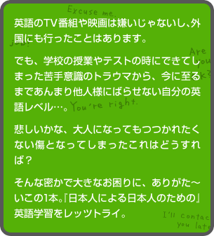
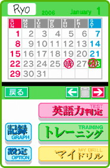
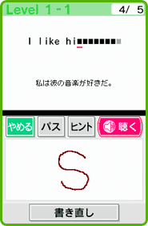
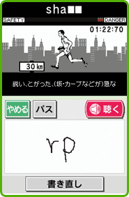
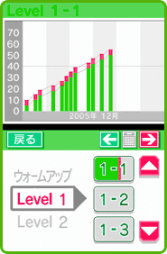

|
 |
| 毎日行えるトレーニングと、現在の実力を１日１回だけ判定できる英語力テスト。 しばし迷った後、見たくない現状に正面から対峙する決意をし、英語力テストを選択します。 このソフトではディクテーションといって、聞き取ってそれを書くという方法が採られているので、雑音を嫌う人はイヤホンを使うのが賢い選択かも知れません。 タイマーで減っていく残り時間にビクビクしつつ、出題される簡単な英文を書き取って行きます。 もちろんタッチペンで書くのですが、筆記体は認識しないんですね。書き癖で、ついつい繋げて書いてしまうのです。 それでもなんとか書きつづるわけですが、聞き取りきれない単語があったりして我ながらかなりビックリ(自分に)。 |
| 出題されたのは中学生レベルの簡単な英文にもかかわらず、自分の弱点が丸出しという結果に！ 知ってはいたけど相当ショックです。書いてる時も結果が出た時も、変な汗をかきました。 結果に対して色々と言い訳は思いつくのですが、とにかく恥ずかしいのでお勉強をすることに。 いつかはやらねばと思っていた英語学習、まさかこんなレベルからスタートすることになるとは……結果は当然のことながら絶対に秘密です。 |
| というわけでトレーニングです。 英語力判定テストに似たやり方ということで、レベル別の『トレーニング』と、数あるモードのなかで気に入った『書き取りマラソン』を延々とやり続ける私。 続けるうちに耳が慣れてきたのか、翌日の英語力判定では辛くもちょびっとレベルアップ！ いやしかしもうちょっとレベルが上のはずでは？ とリトライを続けるのですが、綴りが解ってもなかなか書けないというジレンマ。 どうも私は"ｉ(アイ)"の書き方がよろしくないらしく、無駄な時間をロスしているようです。よもやこんなところで詰まっていたとは。 ということで、そこに気をつけて全体的にやや丁寧に書く。焦りは禁物です。 |
| やっぱり英語は毎日続けることが最大のキーなようです。『それが普通』という感覚になるように、聞き取りを繰り返すこと。 するとある時、スッと身体に入ってくるようになって、あまり考え込んで反復しなくても書き取りが出来るようになりました。 もちろん万人向けですが、特に苦手意識を持ったまま大人になってしまったあなたにオススメです！ |